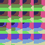

auto64-then-per-asset-cap
Point 0.0326631; global used 2; cold core 50.2 ms
Native-size images and nearest-neighbor enlarged copies. Research only; point error is not an artistic quality score.
Point 0.0326631; global used 2; cold core 50.2 ms
Point 0.0309485; global used 2; cold core 2.8 ms
Point 0.0219785; global used 4; cold core 36.4 ms
Point 0.0203435; global used 4; cold core 3.3 ms
Point 0.0132664; global used 8; cold core 40.6 ms
Point 0.0120755; global used 8; cold core 4.2 ms

Point 0.0079046; global used 16; cold core 42.7 ms
Point 0.0067042; global used 16; cold core 6.4 ms